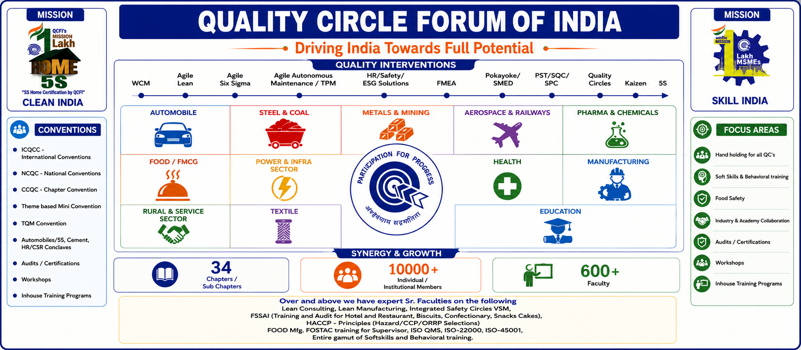

About Us
A local platform for quality, participation and continuous improvement.
Empowering people through quality
Quality Circle Forum of India (QCFI) is a non-profit organisation established in 1982 with the main objective of educating people regarding quality concepts in executing day-to-day activities free from work-related problems and empowerment of the workforce through self and mutual development of people and quality improvement of products and services.
Varanasi Chapter
8, Kamla Nagar,
Sigra, Varanasi,
Uttar Pradesh – 221010
Chairman
Dr. Ashok Rai
Secretary
Dr. A.M. Chakraborty

Quality Circle Forum of India (QCFI) is a non-profit organisation established in 1982 with the main objective of educating people regarding quality concepts in executing day-to-day activities free from work-related problems and empowerment of the workforce through self and mutual development of people and quality improvement of products and services.
QCFI is recognised as the institution representing the Quality Circle Movement in India and has represented the country in several international forums. The organisation has successfully implemented Quality concepts under the TQM umbrella across several industry verticals, which have experienced a phenomenal enhancement of their work processes and productivity after the implementation of Quality Concept Tools.
QCFI provides extensive range of services of quality interventions, training programs, and conventions designed to empower organizations in sectors such as automobile, steel & coal, metals & mining, aerospace & railways, pharma & chemicals, food/FMCG, power & infrastructure, manufacturing, rural & service sectors, textile, health, and education and others. Our expert faculty provides specialized consulting and training in QC,5S, WCM, Lean, Six Sigma, TPM, Safety, FMEA, Kaizen, HACCP, Food Safety (FSSAI Std’s & Requirements), ISO standards, CGPMP (Pharma), GMP, GHP, GSP for all industries, Industry & Academia collaboration, and the entire gamut of soft skills and behavioral training.
The Varanasi Chapter provides a local platform for organizations, professionals and teams to learn, collaborate and present improvement initiatives.